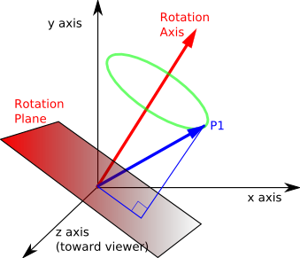
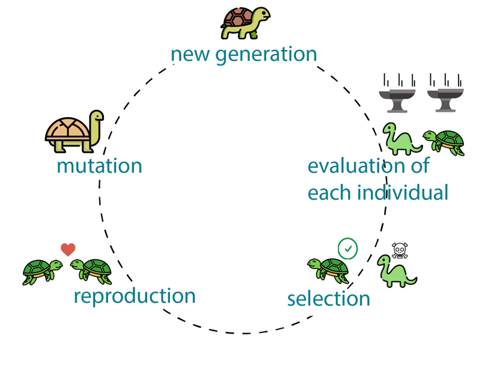
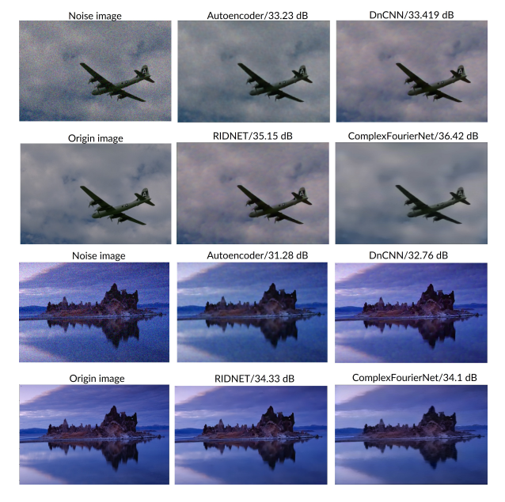

An Hung Nguyen
- Computer Scientist / AI ResearcherHi! I'm An Hung Nguyen, a research assistant at University of Science and Technology (Danang - VN) and an AI Engineer at Quh-lab Tierarzt Dr. Med. Vet. Martin Frettlöh (Germany)
My focus is on creating immersive 3D experiences from easy-to-capture footage of real places. For example, you may want to scan and digitally revisit your childhood home, or capture a VR-ready 3D panorama of the places you visit during a vacation.
Formally, my research interests are computational Biology and Bioinformatics, mathematics, hyper-complex, quaternion number, view synthesis, neural rendering and real-time graphics.
Email / CV / Google Scholar / Linkedin
PUBLICATIONS
|  |
Quaternion Convolutional Neural Networks for Depth Estimation (10.1109/SCISISIS55246.2022.10002074) An Hung Nguyen, Cao Duy Hoang, Dang Hoang Phu Phan , Minh Tuan Pham SCIS&ISIS 2022 |
|  |
Weight Initialization for Complex Number Convolutional Neural Networks Using Genetic Algorithms (10.32913/mic-ict-research-vn.v2022.n1.1054) Minh Tuan Pham, An Hung Nguyen CITA 2022 |
|  |
Efficient Complex Valued Neural Network with Fourier Transform on Image Denoising (10.1145/3508072.3508081) Minh Tuan Pham, Van Quang Nguyen, Cao Duy Hoang,...,An Hung Nguyen ICFNDS 2021 |
HIGHLIGHTS
| Aug 2021 |
Innovative Generation 2021 - second prize (rank 1st) Applying Deep Learning to the process of diagnosing, analyzing and detecting damage to the retina due to diabetes (thanhnien.vn, dantri.com.vn).Update the new neural architecture to optimize and speed up system performance. |
| Mar 2021 |
VISEF - The 4th place award in the computational Biology and Bioinformatics Applying Deep Learning to the process of diagnosing, analyzing and detecting damage to the retina due to diabetes (sgd). |
EDUCATION
| Aug 2021 - Present |
Student in Information Technology / Computers Danang University of Science and Technology (DN - VN) |
| 2018 - 2021 |
Informatics student Le Quy Don - Quang Tri upper-secondary school for the gifted (QT-VN) |